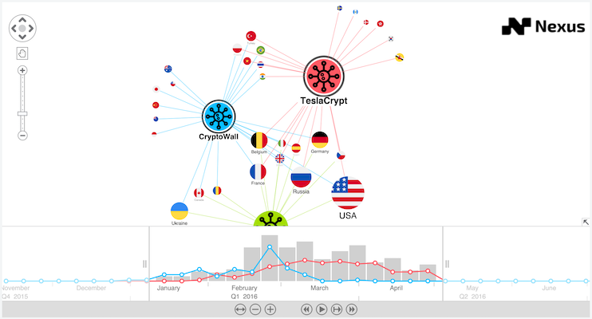
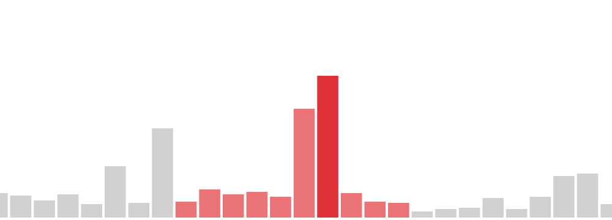
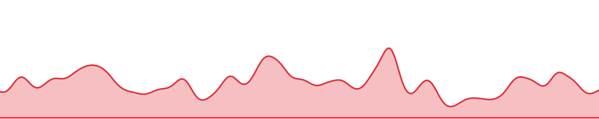
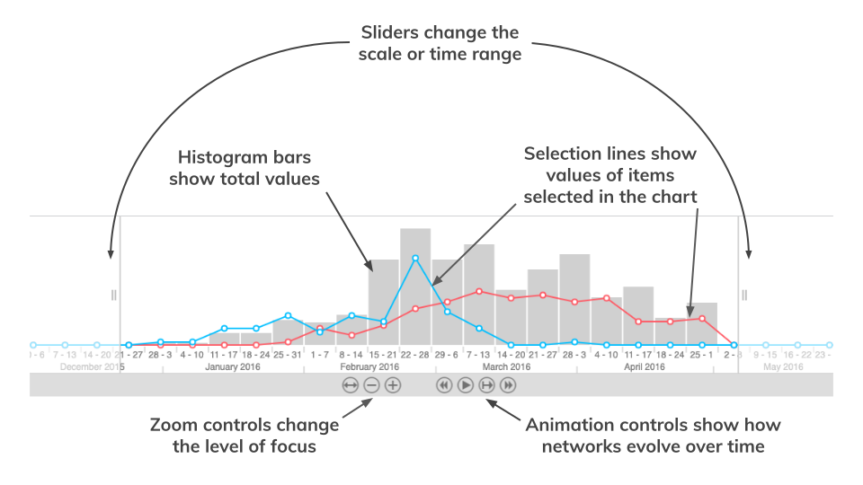

Time Bar
Introduction#
The Nexus time bar lets users quickly spot how connected data evolves over time. It offers powerful ways to filter data through events on both the chart and time bar:
- Chart-driven filtering: select the chart items of interest so the time bar shows when they were involved in events.
- Time bar-driven filtering: focus on the time an event occurred so the chart shows which items were involved.

Key features#
There are two ways that you can display data in the time bar:
Histogram#
Each bar represents a period in time and is a cumulative count of all items within the range. Selection lines do the same, but on a different (usually sub)set of data.
Histogram bars can also display groups of data within them as a set of stacked bars.

Area Plot#
Events and durations are represented as a distribution, with the value trailing off to each side. The height of the area at each point is a total of these distribution values, which creates a smooth shaded area.
As events are discrete, the height of the line only represents an estimate of the value at each point in time. The area under the curve will be filled.

Selection lines#
Selection lines also count items within a range, and provide a useful way to highlight certain subsets of your data. To maintain clarity, selection lines use a different scale to the full data, to prevent them appearing too small. However, the scale of each selection line is the same as for other selection lines, as this enables direct comparison.
Dynamic Animation#
The time bar can play through time to let you see how your data evolves. Other intuitive navigation controls let you move back and forth or zoom in and out easily.
Sliders#
Dragging left and right sliders changes the time scale or selects a specific point in time. You can use these to focus on important data, or get a broad view of a larger period.

You can customise any aspect of the time bar, from the time scales or day/month names to the colour schemes used.
Nexus also supports:
- local time and UTC time - Nexus displays the literal date and time defined in your code. You can choose to support the UTC recorded on a user’s server, or their local time zone. For more information, see the Time Zones documentation.
- multiple time bars - this lets you show time scales at different levels of granularity for the same chart.
- integration with maps - the time bar works with a chart in map mode to provide advanced geo and time-based analysis.
Getting time-based data into Nexus#
The time bar and chart are independent of one another. Once you’ve loaded data into the chart, use the time bar object to load the same JSON data into the time bar:
const data = {
items: [
{ id: 'id1', // 'id1' is the identity that the item relates to
dt: [...], // a time entry or array of time entries - Date objects or numbers,
// or a TimePeriod object
v: [...], // an optional value or array of values for each time entry
// values must be numbers, there must be one for each time entry
},
{ id: 'id2',
dt: [...],
v: [...]
},
...
]
};
timebar.load(data, () => {
// fit the time bar to the data:
timebar.zoom('fit', { animate: false });
});The time bar object's dt property is a JavaScript date object or millisecond number. It can also be a time period object with dt1 and/or dt2 properties representing the start and/or end of the time period.
The v (value) property adds useful details. For example, in a financial investigation you could use it to show the total transaction value at certain times.
Connecting chart and time bar data#
You can attach any chart event to the time bar:
For the chart to update whenever the time bar range changes, you need to listen for the time bar change event and filter the chart. Use:
// When the time bar range changes
timebar.on('change', () => {
// filter the chart to show only items in the new range
chart.filter(timebar.inRange, { animate: false, type: 'link' }, () => {
// and then adjust the chart's layout
chart.layout('organic', { mode: 'adaptive', animate: true, time: 1000 });
});
});For the time bar to show a selection line that represents items selected on the chart, you need to listen for the chart selection-change event. Use:
chart.on('selection-change', () => {
timebar.selection({ id: chart.selection() });
});See also#
Every time bar function, event and option is documented in the API Reference.